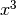
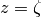
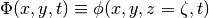

wavetank_reflecting Package
JONSWAP Module
A script for initializing data files of a Quasi-3D wave simulation via
the JONSWAP spectrum and directional distribution.
GENERAL NOTES
PROGRAM: JONSWAP.py (Python Script File)
AUTHOR: Matt Malej (matt.malej@erdc.dren.mil)
- PURPOSE: This Python script is designed to set up and initalize the wave
field via a JONSWAP spectrum and for both directionally confined and
and directional varied distribution.
Will serve as input for simulating linear and eventually weakly nonlinear
random surface water waves in realistic settings.
The module imports JONSWAP_p.py (p = physics), where all the input
parameters are specified.
INPUT: Phyical parameters from JONSWAP_p.py
- Self NOTE: for FFT your transforming function needs to be periodic on your
- domain and do NOT make your first and final point in the domain equal!
... i.e. for sin(x) do NOT make x=[0,2*pi], but instead x=[dx,2*pi]!
LAST UPDATE: September 11, 2012
-
benchmarks.wavetank_reflecting.JONSWAP.JONSWAP()[source]
Sets a wave field according to JONSWAP ocean wave spectrum.
JONSWAP_p Module
L2_batch Module
animation Module
-
class benchmarks.wavetank_reflecting.animation.Animation(fig, event_source=None, blit=False)[source]
Bases: object
This class wraps the creation of an animation using matplotlib. It is
only a base class which should be subclassed to provide needed behavior.
fig is the figure object that is used to get draw, resize, and any
other needed events.
event_source is a class that can run a callback when desired events
are generated, as well as be stopped and started. Examples include timers
(see TimedAnimation) and file system notifications.
blit is a boolean that controls whether blitting is used to optimize
drawing.
-
ffmpeg_cmd(fname, fps, codec, frame_prefix)[source]
-
mencoder_cmd(fname, fps, codec, frame_prefix)[source]
-
new_frame_seq()[source]
Creates a new sequence of frame information.
-
new_saved_frame_seq()[source]
Creates a new sequence of saved/cached frame information.
-
save(filename, fps=5, codec='mpeg4', clear_temp=True, frame_prefix='_tmp')[source]
Saves a movie file by drawing every frame.
filename is the output filename, eg mymovie.mp4
fps is the frames per second in the movie
codec is the codec to be used,if it is supported by the output method.
clear_temp specifies whether the temporary image files should be
deleted.
frame_prefix gives the prefix that should be used for individual
image files. This prefix will have a frame number (i.e. 0001) appended
when saving individual frames.
-
class benchmarks.wavetank_reflecting.animation.ArtistAnimation(fig, artists, *args, **kwargs)[source]
Bases: benchmarks.wavetank_reflecting.animation.TimedAnimation
Before calling this function, all plotting should have taken place
and the relevant artists saved.
frame_info is a list, with each list entry a collection of artists that
represent what needs to be enabled on each frame. These will be disabled
for other frames.
-
class benchmarks.wavetank_reflecting.animation.FuncAnimation(fig, func, frames=None, init_func=None, fargs=None, save_count=None, **kwargs)[source]
Bases: benchmarks.wavetank_reflecting.animation.TimedAnimation
Makes an animation by repeatedly calling a function func, passing in
(optional) arguments in fargs.
frames can be a generator, an iterable, or a number of frames.
init_func is a function used to draw a clear frame. If not given, the
results of drawing from the first item in the frames sequence will be
used.
-
new_frame_seq()[source]
-
new_saved_frame_seq()[source]
-
class benchmarks.wavetank_reflecting.animation.TimedAnimation(fig, interval=200, repeat_delay=None, repeat=True, event_source=None, *args, **kwargs)[source]
Bases: benchmarks.wavetank_reflecting.animation.Animation
Animation subclass that supports time-based animation, drawing
a new frame every interval milliseconds.
repeat controls whether the animation should repeat when the sequence
of frames is completed.
repeat_delay optionally adds a delay in milliseconds before repeating
the animation.
boxesInTank3dDomain Module
ls_consrv_n Module
ls_consrv_p Module
ls_n Module
ls_p Module
potential Module
NOTE:
This module defines the velocity potential based on linear
theory from the free-surface spectrum. Higher order corrections
can be implemented if needed, but recall that the linear solution
for velocity potential of a Stokes wave is valid up to third
in wave steepness, hence capturing the required bound
and free waves.
-
benchmarks.wavetank_reflecting.potential.velocityPotential(spec, gv, kx, ky)[source]
redist_n Module
redist_p Module
spectrum Module
This module (spectrum.py) is to be included in the main JONSWAP.py module.
It defines a JONSWAP spectrum and adds a desired degree of directional
spreading with a random phase.
-
benchmarks.wavetank_reflecting.spectrum.factorial_1(ns)[source]
-
benchmarks.wavetank_reflecting.spectrum.factorial_2(ns)[source]
-
benchmarks.wavetank_reflecting.spectrum.jonswap(nx, ny, Hs, gamma, fp, nspread, thetam, gv, kx, ky)[source]
-
benchmarks.wavetank_reflecting.spectrum.sigma(omega, omega_peak)[source]
This function returns value of sigma in JONWSAP.
Note that the inputs are acutally omega**2 and omega_peak**2,
but it doesn’t matter for the return value!
-
benchmarks.wavetank_reflecting.spectrum.spreading(vkx, vky, ns, max_angle)[source]
twp_navier_stokes_n Module
twp_navier_stokes_p Module
vof_n Module
vof_p Module
waveModules_Matt Module
-
class benchmarks.wavetank_reflecting.waveModules_Matt.Linear2D(amplitude, omega, k, depth, rho_0, rho_1, randomPhase)[source]
A class for linearized solutions of 2D flow (1D + surface) for
travelling progressive waves ~ exp(kx-wt)
An equation
More text, inline math 
-
height(x, t)[source]
Gives a linearized solution for the air-water interface to the
potential flow model in two dimensions (x,y,z=eta) for finite depth.
-
pressure(x, t)[source]
Gives linearized pressured with P_atm = 0
-
velocity_u(x, t)[source]
Defines a linearized solution to the potential flow
model in two dimensions (x,y,z) for finite depth,
as well as, deep and shllow water limits.
-
velocity_v(x, t)[source]
-
velocity_w(x, t)[source]
Gives a linearized solution velocity in x-dir to the potential flow
model in two dimensions (x,y,z) for finite depth, as well as, deep
and shallow water limits.
-
class benchmarks.wavetank_reflecting.waveModules_Matt.Solitary(amplitude, omega, k, depth, rho_0, rho_1)[source]
Class that defines a solitary wave profile
of a constant initial amplitude.
-
height(x, t)[source]
-
pressure(x, t)[source]
-
velocity_u(x, t)[source]
-
velocity_v(x, t)[source]
-
velocity_w(x, t)[source]
-
class benchmarks.wavetank_reflecting.waveModules_Matt.StokesWave(amplitude, omega, k, depth, rho_0, rho_1)[source]
Class that defines a 2nd order Stokes wave (2nd in wave steepness),
which included all 3-wave interactions and is an appropriate
model for gravity-capillary waves.
For steep open ocean gravity waves, need to extend to third
order to capture all 4-wave interactions.
- NOTE: Stokes waves are only defined in 2D (x,z) - no y dependence.
- This expansion if for kh = O(1), but the limits of kh–>infinity,
or kh–>0 can be readily derived as well.
-
height(x, t)[source]
-
potential(x, t)[source]
Velocity Potential correct up to second order.
- NOTE: here it is setup such that the mean depth is at L[2]/2 and the
- wavetank bottom is located at z=0, otherwise if the mean
water depth=0, then we need x[2]==>x[2]+self.depth chenged below!
-
pressure(x, t)[source]
Defined through first order pressure based on lineqrized equations
but with a second order correction to velocity potential such that
pressure = rho*omega_NL/k * potential
with P_atm = 0.
-
velocity_u(x, t)[source]
Defined via potential flow: u = d/dx{potential}.
-
velocity_v(x, t)[source]
Stokes wave exists in 2D only (x,z) - no y dependence.
-
velocity_w(x, t)[source]
Defined via potential flow: w = d/dz{potential}.
-
class benchmarks.wavetank_reflecting.waveModules_Matt.WaveGroup(amplitude, omega, k, depth, rho_0, rho_1, randomPhase)[source]
Class that defines a nearly monochromatic
wave train/group of waves of same amplitude.
-
height(x, t)[source]
-
pressure(x, t)[source]
-
velocity_u(x, t)[source]
Defines a linearized solution to the potential flow
model in two dimensions (x,y,z) for finite depth,
as well as, deep and shllow water limits, for slowly
varying regular wavetrains.
-
velocity_v(x, t)[source]
-
velocity_w(x, t)[source]
-
class benchmarks.wavetank_reflecting.waveModules_Matt.true_Linear2D(amplitude, omega, k, depth, rho_0, rho_1, randomPhase)[source]
A class for linearized solutions of 2D flow (1D + surface) for
travelling progressive waves ~ exp(kx-wt)
An equation
More text, inline math
-
height(x, t)[source]
Gives a linearized solution for the air-water interface to the
potential flow model in two dimensions (x,y,z=eta) for finite depth.
-
pressure(x, t)[source]
Gives linearized pressured with P_atm = 0
-
velocity_u(x, t)[source]
Defines a linearized solution to the potential flow
model in two dimensions (x,y,z) for finite depth,
as well as, deep and shllow water limits.
-
velocity_v(x, t)[source]
-
velocity_w(x, t)[source]
Gives a linearized solution velocity in x-dir to the potential flow
model in two dimensions (x,y,z) for finite depth, as well as, deep
and shallow water limits.
-
class benchmarks.wavetank_reflecting.waveModules_Matt.waveJONSWAP(amplitude, depth, L)[source]
Class that defines a wave field based on realistic wave spectrum.
The JONSWAP wave spectrum with directional distribution and
random phases.
-
JONSWAP(x, t)[source]
Sets a wave field according to JONSWAP ocean wave spectrum.
-
height(x, t)[source]
-
pressure(x, t)[source]
Pressure was defined via linearized theory (Bernoulli Eqn.)
-
velocity_u(x, t)[source]
Returns the velocity at the free-surface (z=surface)
- NOTE: to extract velocity at any height z, write down the
- power series and take fft() of for every z
... little time consuming, might need a bit of Cython here!
The velocity potential defined at the free-surace  is
given by 
where  is the vertical velocity defined at the free-surface
given through a Dirichlet-to-Neumann operator relation.
is the vertical velocity defined at the free-surface
given through a Dirichlet-to-Neumann operator relation.
-
velocity_v(x, t)[source]
Returns the velocity at the free-surface (z=surface)
- NOTE: to extract velocity at any height z, write down the
- power series and take fft() of for every z
... little time consuming, might need a bit of Cython here!
The velocity potential defined at the free-surace is
given by
where is the vertical velocity defined at the free-surface
given through a Dirichlet-to-Neumann operator relation.
wavetank Module
wavetank_Matt Module
wavetank_prev Module
wavetank_so Module
wavetank_stashed Module